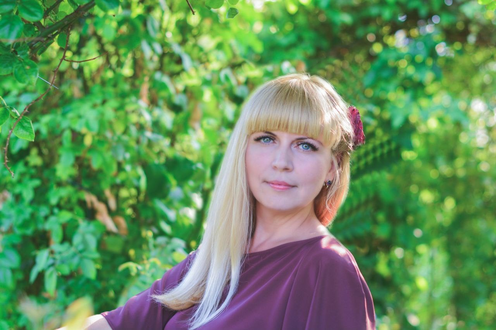
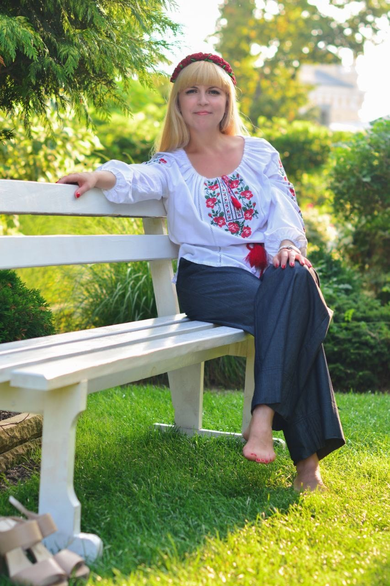

About the Artist

"To reach the goal, the main thing is to go!"
Natalia Horbunova
My name is Natalia Horbunova. Kind, caring, and purposeful. I am interested in psychology and astrology, and have a good sense of humor. My hobbies are doll making and painting. I am a specialist in economics and an accountant with extensive experience.
I am Ukrainian and I live in Cherkasy, Ukraine. War is a time of true courage and faith for all Ukrainians. My creativity helps me to break away from the difficult reality — it gives me the opportunity to calm down, distract myself from the air raid sirens, and reduce the feeling of anxiety.
Despite the tragic circumstances, Ukraine remains a territory of freedom, where life continues and new ideas are born. New creative projects!

"Happiness can be found, even in the darkest of times, if one only remembers to turn on the light." — J.K. Rowling
About the Work
I just love what I do. While drawing, I fill each picture with positive energy — I do this with great pleasure, because I believe there is a cycle of energy in the world. What you send out will come back. My goal is to fill your homes and hearts with joy and satisfaction.
Part of the funds earned will be transferred to humanitarian projects and charitable funds to help Ukrainians affected during the war.
Contact
Interested in a painting or have a question? Reach out:
your@email.com
[Replace with your contact email]